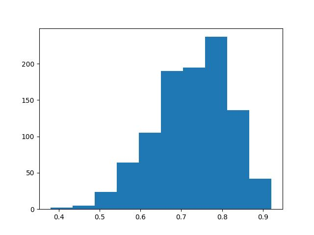
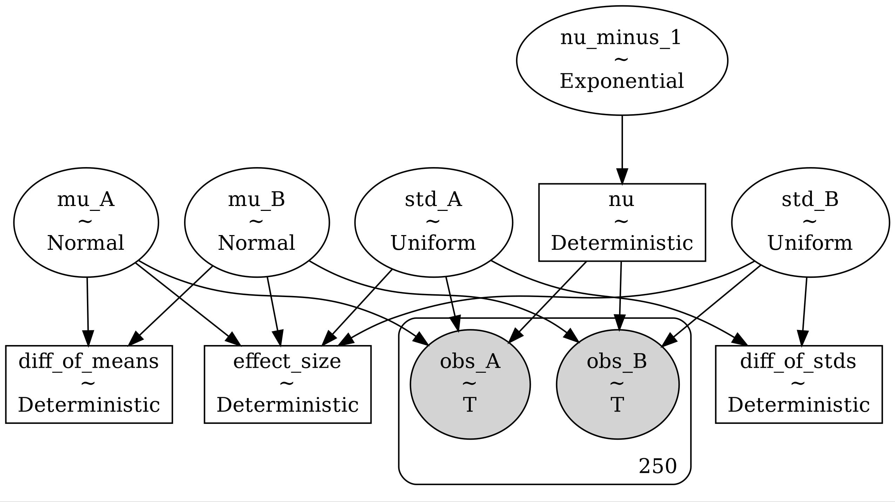
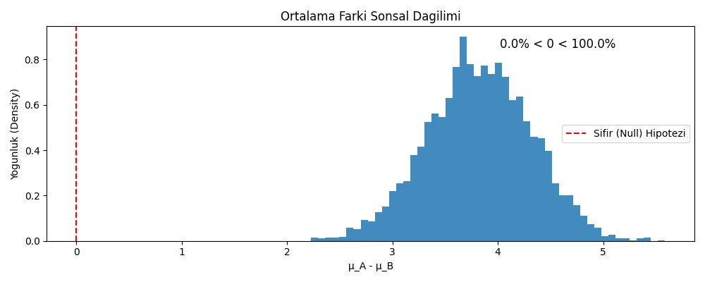

Veri analizinde Bayes teorisi kullanımı sayesinde veri olasılığı, bilmediğimiz parametreler hakkındaki bazı bilgilerimizi formülasyona dahil edebiliyoruz. Bunun bir örneğini MAP hesaplarını işlerken gördük. Bu bölümde Bayes formüllerinin sonuçlarını bulmak için bazı hesapsal teknikleri işleyeceğiz, ve niye faydalı olduklarını anlamaya uğraşacağız.
Temel olasılık teorisinden biliyoruz ki Bayes teorisi
\[ P(A | B) = \frac{P(B|A) P(A)}{P(B)} \]
diye gider. Üstteki formülü veri analizine uyarlayabiliriz. İstatistiki modelin parametreleri \(\theta\)’yi \(A = \theta\) yaparız, \(B = \textrm{veri}\) deriz, o zaman Bayes teorisi elde edilen verinin parametre hesabı \(\theta\) için nasıl kullanılacağının formülünü gösterir,
\[ P(\theta | \textrm{veri}) = \frac{P(\textrm{veri} | \theta) \times P(\theta)}{P(\textrm{veri})} \]
Formül öğelerinin açıklamasını [4] yazısında bulabiliriz. Tekrarlamak gerekirse, sol tarafta, veriyi gördükten sonra ne bildiğinizi temsil eden, sonsal dağılım olan \(P(\theta \mid \text{veri})\) bulunur. Bu, çıkarımın temelini oluşturur ve açıkça aradığınız şeydir; eğer birden fazla parametreniz varsa, muhtemelen çok değişkenli bir dağılım. Sağ tarafta, olurluk olan \(P(\text{veri} \mid \theta)\) bulunur. Bu miktar, En Yüksek Olurluk Tahmini (MLE) yaklaşımındaki ile aynıdır. Evet, Bayeşçi ve frekansçı yaklaşımların çekirdeğinde aynı olurluk bulunur, bu da sonuçların genellikle neden çok farklı olmadığını büyük ölçüde açıklar. Olurluk, \(\theta\) ile parametrelendirilmiş bir model verildiğinde, verinizdeki bilginin olasılığını gösterir.
Ardından, önsel dağılım olan \(P(\theta)\) gelir. Bu miktar, veriyi görmeden önce ne bildiğinizi temsil eder. Eğer \(\theta\) hakkında hiçbir şey bilmiyorsanız, belirsiz olabilir. Ancak genellikle sıfırdan başlamazsınız ve önselinizin sahip olduğunuz bilgiyi yansıtmasını istersiniz.
Son olarak, bazen ortalama olurluk olarak adlandırılan \(P(\text{veri})\) bulunur, çünkü sonsalın standartlaştırılması, yani bir dağılım olması için bire entegre olması amacıyla, olurluk önsele göre entegre edilerek elde edilir: \(P(\text{veri}) = \int P(\text{veri} \mid \theta) P(\theta)d\theta\). Ortalama olurluk, tahmin etmeniz gereken \(\theta\) parametrelerinin sayısı boyutunda bir integraldir. Bu, genel olarak hesaplanması imkansız olmasa da zordur. Bayesçi yöntemin yakın zamana kadar kullanılmamasının nedenlerinden biri de budur.
Örneğin, ekolojide kullanilan bir yakalama-tekrar yakalama modelini, tespit olasılığı \(p\) ve hayatta kalma olasılığı ile bir kovaryat arasındaki ilişkinin kesişim ve eğimi için regresyon parametreleri \(\alpha\) ve \(\beta\) ile uyarlamak istediğinizi düşünün. Bu durumda Bayes teoremi, her üç parametrenin birlikteki sonsal dağılımını size verir:
\[P(\alpha, \beta, p \mid \text{veri}) = \frac{P(\text{veri} \mid \alpha, \beta, p) \times P(\alpha, \beta, p)}{\iiint P(\text{veri} \mid \alpha, \beta, p) P(\alpha, \beta, p)d\alpha d\beta dp}\]
Bu formülde bir hesaplama zorluğu var. Bölende üç boyutlu bir integrali görüyoruz, bu entegral çok çetrefilli bir çözümdür, analitik çözüm çoğunlukla mümkün değildir, hesapsal yaklaşımlar gerekir. Bu entegralin her durumda hesaplanması gerekmeyebiliyor, mesela [4]’te gördük ki aranılan bir parametre maksimize edilmeye çalışılan büyüklükte bölen değerine ihtiyaç duymuyordu, bu sebeple onu yok sayabildik. Fakat bazen bölendeki entegral kesinlikle gerekir, mesela iki farklı Bayes modelini karşılaştırıyorsak, bölendeki değer iptal edilemez, ve hesaplanması gerekir.
Fakat bölümdeki entegral lazım olmasa bile, yani normalize edici katsayıyı bilmeden yine de sonsal dağılıma “orantılı” bir sonuç elde edebilsek bile, orada da analitik sonuç alamayacağımız ortaya çıkabiliyor, ve orada için yine yaklaşık yöntemlere başvurmamız gerekiyor.
Bir deneyde tepki süresi ölçümlerinden oluşan tek değişkenli verilere sahip olduğumuzu varsayalım. Bu veriyi modellemek için, Weibull dağılımının faydalı bir tanımlayıcı model olacağını varsayalım.
Weibull için olasılık yoğunluk fonksiyonu şudur:
\[p(y|a,b)=ba^{-b}y^{b-1}e^{-(\frac{y}{a})^{b}}I_{(0,inf)}(y)\]
Bu dağılımın iki parametresi vardır: a dağılımın ölçeğini ve b ise dağılımın şeklini kontrol eder. Verilerimizin \(y_{i}\) ile temsil edildiğini, \(i\in1..N\) olduğunu ve \(N\)’nin gözlem sayısını gösterdiğini varsayalım. Modelimizde, her gözlemin bir Weibull dağılımından bağımsız bir çekiliş olduğunu varsayalım.
Bu varsayımlar göz önüne alındığında, verilerimiz için artık bir olurluk fonksiyonuna (likelihood function) sahibiz. Her gözlemin \(a\) ve \(b\) parametrelerine sahip bir Weibull’dan bağımsız bir çekiliş olduğu varsayılırsa, tüm gözlemlerin olasılığı şu şekilde verilir:
\[p(y_{1},...,y_{N}|a,b)=p(y_{1}|a,b)p(y_{2}|a,b)...p(y_{N}|a,b)\] \[=\prod_{i}p(y_{i}|a,b)\] \[=\prod_{i}ba^{-b}y_{i}^{b-1}e^{-{(\frac{y_{i}}{a})}^{b}}I_{(0,inf)}(y_{i})\]
Ancak model tanımımızla henüz tamamen işimiz bitmedi. Her Bayesci analizde, parametreler üzerinde önsel dağılımları (prior distributions) da belirtmemiz gerekir. \(a\) ve \(b\) parametrelerinin sırasıyla \(\lambda_{a}\) ve \(\lambda_{b}\) parametrelerine sahip bir üstel dağılıma (exponential distribution) göre bağımsız olarak dağıldığını varsayalım.
Bu önsel dağılımların yogunluklari şunlardır
\[p(a|\lambda_{a})=\frac{1}{\lambda_{a}}e^{-\frac{a}{\lambda_{a}}}\] \[p(a|\lambda_{b})=\frac{1}{\lambda_{b}}e^{-\frac{b}{\lambda_{b}}}\]
Yukarıda ifade edilen modelin, örnekleme notasyonu (sampling notation) kullanılarak çok daha basit terimlerle açıklanabileceğini belirtmeliyiz:
\[\begin{array}{l}y_{i}|a,b\sim Weibull(a,b)\\a\sim Exp(\lambda_{a})\\b\sim Exp(\lambda_{b})\end{array}\]
Artık hem bir olurluk hem de tüm parametreler üzerinde bir önsel içeren, tamamen belirlenmiş bir modele sahibiz. Amaç, sonsal çıkarım (posterior inference) yapmak ve verilere koşullu olarak parametreler üzerindeki sonsal dağılımı bulmaktır.
Daha önce şunu belirtmiştik:
\[p(\theta|D)\propto p(D|\theta)p(\theta)\]
Bizim durumumuzda, \(\theta=(a,b)\) ve \(D=(y_{1},...,y_{N})\)’dir. Bu nedenle, şunu yazabiliriz:
\[p(a,b|y_{1},...,y_{N})\propto p(y_{1},...,y_{N}|a,b)p(a,b)\]
\(a\) ve \(b\) parametreleri üzerinde bağımsız önsel kullanmaya karar verdiğimize dikkat edin. Bu bize şunu yazma olanağı verir:
\[ p(a,b|y_{1},...,y_{N}) \propto p(y_{1},...,y_{N}|a,b) \]
Bu sonsal dağılımın fonksiyonel biçiminin neye benzediğini görmek için açılımı yapalım,
\[p(a,b|y_{1},...,y_{N}) \propto (\prod_{i}ba^{-b}y_{i}^{b-1}e^{-(\frac{y_{i}}{a})^{b}}I_{(0,inf)}(y_{i}))\frac{1}{\lambda_{a}}e^{-\frac{a}{\lambda_{a}}} \frac{1}{\lambda_{b}}e^{-\frac{b}{\lambda_{b}}} \]
Bu ifade analitik tekniklere uygun değildir.
import pymc as pm, scipy.stats as stats
import pandas as pdY = stats.bernoulli(0.7).rvs(20)
theta = 0.5
with pm.Model() as model:
theta = pm.Beta("theta", alpha=1, beta=1)
y_obs = pm.Binomial("eta_obs", n=1, p=theta, observed=Y)
idata = pm.sample(1000, return_inferencedata=True)theta_post = np.array(idata.posterior['theta'])
print (np.mean(theta_post))
plt.hist(theta_post[0],bins=10)
plt.savefig('tser_023_bsts_03.jpg')0.5952869333604922
graphviz = pm.model_to_graphviz(model)
graphviz.graph_attr.update(dpi="300")
graphviz.render("tser_023_bsts_02", format="jpg")Out[1]: 'tser_023_bsts_02.jpg'
N = 250
mu_A, std_A = 30, 4
mu_B, std_B = 26, 7
durations_A = np.random.normal(mu_A, std_A, size=N)
durations_B = np.random.normal(mu_B, std_B, size=N)
print (durations_A[:8])
print (durations_B[:8])[24.16407223 26.33809627 26.02574579 33.21505722 28.50448144 26.99996422
30.76649221 30.59385573]
[35.63522369 24.06562288 30.18425953 22.17136243 32.47047614 32.74779037
33.07401654 34.0171137 ]# Pool the data for priors
pooled_mean = np.r_[durations_A, durations_B].mean()
pooled_std = np.r_[durations_A, durations_B].std()
# Build the model in modern PyMC
with pm.Model() as model:
# Priors
mu_A = pm.Normal("mu_A", mu=pooled_mean, sigma=1000*pooled_std)
mu_B = pm.Normal("mu_B", mu=pooled_mean, sigma=1000*pooled_std)
std_A = pm.Uniform("std_A", lower=pooled_std/1000., upper=1000.*pooled_std)
std_B = pm.Uniform("std_B", lower=pooled_std/1000., upper=1000.*pooled_std)
nu_minus_1 = pm.Exponential("nu_minus_1", lam=1./29)
nu = pm.Deterministic("nu", nu_minus_1 + 1)
# Likelihood - using StudentT instead of NoncentralT
obs_A = pm.StudentT("obs_A", nu=nu, mu=mu_A, sigma=std_A, observed=durations_A)
obs_B = pm.StudentT("obs_B", nu=nu, mu=mu_B, sigma=std_B, observed=durations_B)
# Derived quantities (deterministic nodes)
diff_of_means = pm.Deterministic("diff_of_means", mu_A - mu_B)
diff_of_stds = pm.Deterministic("diff_of_stds", std_A - std_B)
effect_size = pm.Deterministic("effect_size",
(mu_A - mu_B) / pm.math.sqrt((std_A**2 + std_B**2) / 2))
# Sample
trace = pm.sample(2000, tune=1000, return_inferencedata=False, cores=1)
Step Grad Sampli…
Progre… Draws Diverg… size evals Speed Elapsed Remaini…
3000 0 0.901 7 1955.03 0:00:01 0:00:00
draws/s
3000 0 0.982 7 962.38 0:00:03 0:00:00
draws/s
graphviz = pm.model_to_graphviz(model)
graphviz.graph_attr.update(dpi="300")
graphviz.render("stat_047_bayes_02", format="jpg")Out[1]: 'stat_047_bayes_02.jpg'
diff_means_trace = trace['diff_of_means']
diff_stds_trace = trace['diff_of_stds']
effect_size_trace = trace['effect_size']
plt.figure(figsize=(10, 4))
plt.hist(diff_means_trace, bins=50, histtype='stepfilled', alpha=0.85, density=True)
plt.axvline(0, color='red', linestyle='--', label='Sifir (Null) Hipotezi')
plt.xlabel('μ_A - μ_B')
plt.ylabel('Yogunluk (Density)')
plt.title('Ortalama Farki Sonsal Dagilimi')
# Sifirdan buyuk olma yuzdesi
pct_greater = (diff_means_trace > 0).sum() / len(diff_means_trace) * 100
pct_less = (diff_means_trace < 0).sum() / len(diff_means_trace) * 100
plt.text(0.7, 0.9, f'{pct_less:.1f}% < 0 < {pct_greater:.1f}%',
transform=plt.gca().transAxes, fontsize=12)
plt.legend()
plt.tight_layout()
plt.savefig('stat_047_bayes_01.jpg')
[devam edecek]
Kaynaklar
[1] Kruschke, Bayesian Estimation Supersedes the t Test
[2] Pillon, Bayesian Method for Hackers
[3] Gimenez, Bayesian analysis of capture-recapture data with hidden Markov models
[4] Bayramli, Istatistik, Tahmin Edici Hesaplar (Estimators)
[5] Bayramli, Istatistik, Değişim Noktası Analizi (Changepoint Analysis)